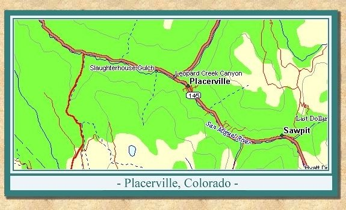
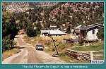
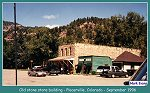
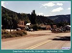

| Placerville was originally founded as a small mining camp. It was appropriately named after the placer mines located on the San Miguel River and Leopard Creek. The mining camp became known as Old Placerville after the RGS established a depot and a number of passing sidings west of the original settlement and called it Placerville. |
| The depot originally serviced the mines in the local area as well as a number of sawmills. When the mines and timber played out, Placerville became a supply center for ranchers in the region, as well as one of the most important livestock shipping points in western Colorado. In the 1930's and 1940's both Conoco and Texaco maintained bulk distribution depots in Placerville. |
| Today the highway follows the railroad grade through town. The M&M Mercantile, the old schoolhouse and the stone garage still remain from the days of the RGS. The Placerville depot still exists, although it has been moved and is now in use as a private residence. It can be found one block above the mercantile store. |

|
 |
The old Placerville Depot is
now a private residence September 1996 (103k) |
|
 |
Old stone store in downtown
Placerville, Colorado September 1996 (83k) |
|
 |
Old stone store in downtown
Downtown Placerville, Colorado September 1996 (77k) |

|
The Narrow Gauge Circle is written, maintained,and hosted by: Mark L. Evans Send Comments to:Mark L. Evans All original materials, text, and digital images Copyright © 1995-2014 Mark L. Evans. All rights reserved. Imitation is said to be the "sincerest" form of flattery.....Please don't flatter us without permission. |